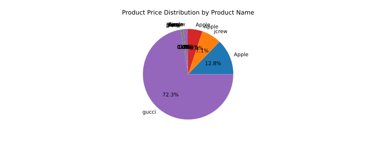
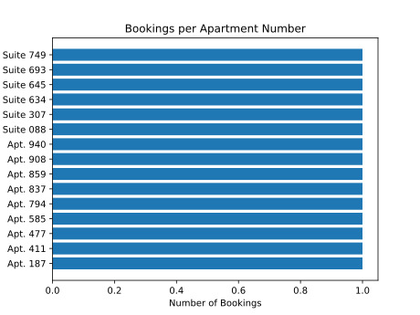
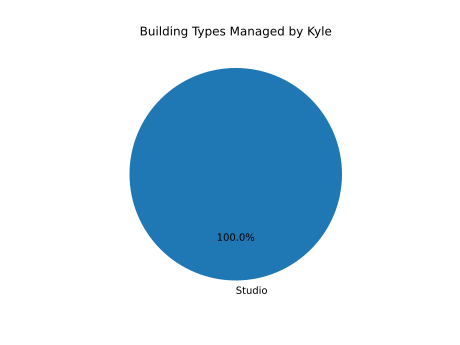
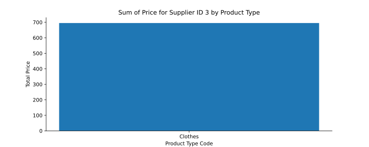
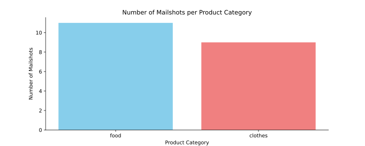
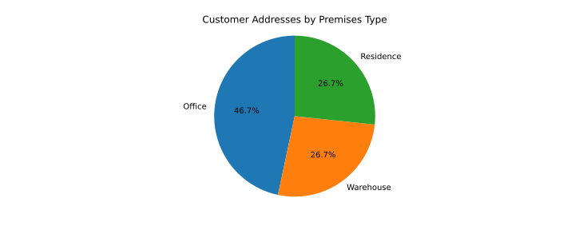
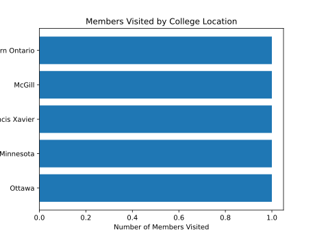
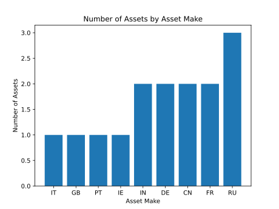
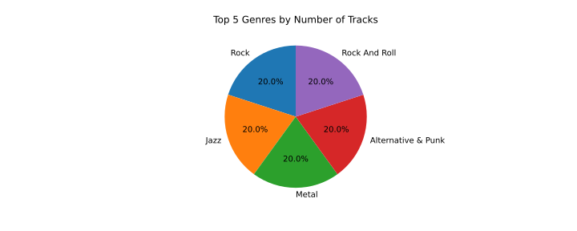

生成的图表数据点数量多于 Ground Truth。通常是因为模型没有做 GROUP BY 聚合，直接画了原始数据的每一行。
SELECT T1.product_name, SUM(T2.order_quantity) FROM products AS T1 JOIN order_items AS T2 ON T1.product_id = T2.product_id GROUP BY T1.product_name
SELECT apt_number, COUNT(apt_number) FROM Apartment_Bookings AS T1 JOIN Apartments AS T2 ON T1.apt_id = T2.apt_id GROUP BY apt_number ORDER BY COUNT(apt_number) ASC
生成的图表数据点数量少于 Ground Truth。通常是过滤条件错误或分组不完整。
SELECT apt_type_code, COUNT(apt_type_code) FROM Apartment_Buildings AS T1 JOIN Apartments AS T2 ON T1.building_id = T2.building_id WHERE T1.building_manager = "Kyle" GROUP BY apt_type_codebuilding_description instead of apt_type_code for grouping, gets only 1 result
filters by supplier_id = 3, groups by product_type_code
生成的数据点在 Ground Truth 中找不到匹配。通常是聚合方式错误或列选择错误，导致数值不对。
SELECT product_category, count(*) FROM mailshot_campaigns GROUP BY product_category ORDER BY count(*) DESC
SELECT premises_type, COUNT(premises_type) FROM customer_addresses AS T1 JOIN premises AS T2 ON T1.premise_id = T2.premise_id GROUP BY premises_type
数据类型错误——通常是 x 轴应该是分类型（categorical）但模型用了数值型（quantitative），比如用数字索引代替了分类标签。
SELECT College_Location, COUNT(College_Location) FROM college AS T1 JOIN member AS T2 ON T1.College_ID = T2.College_ID GROUP BY College_Location ORDER BY COUNT(College_Location) DESCax.barh(...) making x-axis quantitative instead of categorical
SELECT asset_make, COUNT(asset_make) FROM Assets GROUP BY asset_make ORDER BY COUNT(asset_make) ASCrange(len(...)) as x-axis instead of asset_make names
生成的数据中存在重复的数据点，通常是分组不唯一导致。
SELECT T1.name, COUNT(*) FROM genres AS T1 JOIN tracks AS T2 ON T2.genre_id = T1.id GROUP BY T1.id ORDER BY count(*) DESC LIMIT 5